Di seguito s’illustra un progetto di un sistema volto alla rilevazione di temperatura di più punti non collegati fisicamente tra loro. Questi comunicano tramite il protocollo ZIGBEE utilizzato dei moduli wireless xBee. Questo sistema integra al suo interno moduli xBee Serie 2 e sensori di temperatura LM35. Pur essendo un progetto artigianale e scolastico, non è molto ingombrante (7,7 cm di larghezza x 6,5 cm di lunghezza x 4,8 cm di altezza). Sono stati realizzati mediante il software SolidWorks e una stampante 3D i contenitori per ogni sensore.
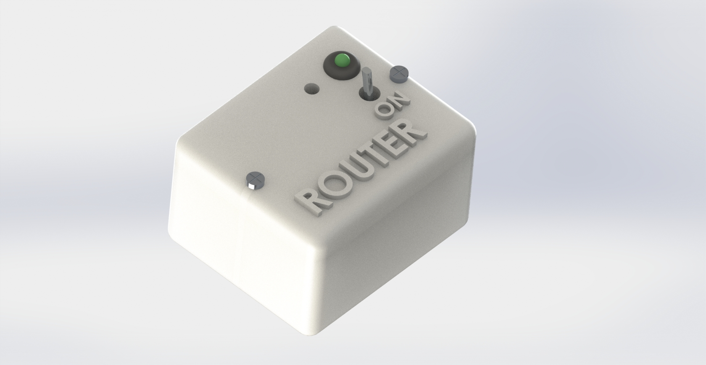
Questa rete di sensori è pensata per monitorare la temperatura in un bosco per prevenire un incendio. È costituita da un punto centrale collegato a un PC e da tanti moduli uguali contenenti un sensore di temperatura. La comunicazione con il punto centrale avviene tramite i moduli wireless xBee. Il protocollo di comunicazione usato tra di essi è lo ZIGBEE, protocollo implementato nei moduli xBee che permette un basso consumo energetico rispetto alla comunicazione wireless di base. I moduli sono costituiti da: una batteria a 9V, un interruttore, un circuito di regolazione a 3.3V, un led che segnala la presenza di alimentazione, un xBee ed un sensore di temperatura LM35. L’xBee deve essere alimentato con una tensione compresa tra 3V e 3.4V, il datasheet consiglia 3.3V. È stato scelto un sensore di temperatura LM35 perché i moduli xBee in modalità ZIGBEE possono accettare in ingresso al loro ADC tensioni da 0V a 1.2V. LM35, infatti, fornisce in uscita 0V a 0°C e 1.2V a 120°C con un passo di 10mV/°C. Utilizzando questo sensore quindi non serve un circuito di condizionamento del suo segnale.
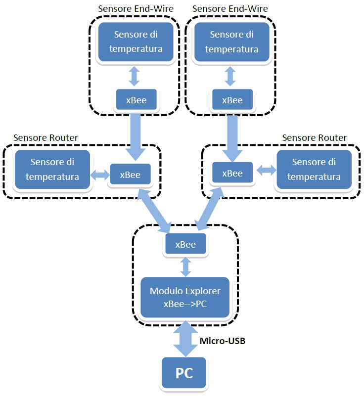
Nel mondo delle tecnologie senza fili ZigBee rappresenta uno dei principali standard di comunicazione. Attraverso l'uso di piccole antenne digitali a bassa potenza e basso consumo basate sullo standard IEEE 802.15.4. Ci sono tre differenti tipi di dispositivo ZigBee:
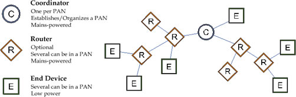
Il contenitore del circuito è stato pensato per essere posto in un bosco, interrato nel suolo con il sensore di temperatura fuoriuscente oppure incastrato in un albero. E’ diviso in 2 parti: una interna che tiene saldi tutti i componenti ed una esterna che funge da “coperchio” che protegge l’interno e fa scorgere l’interruttore, il sensore e il LED. Il contenitore è inoltre pensato per essere impermeabile, sfortunatamente non avendo i mezzi a disposizione ne sono stati realizzati dei prototipi con una stampante 3D.
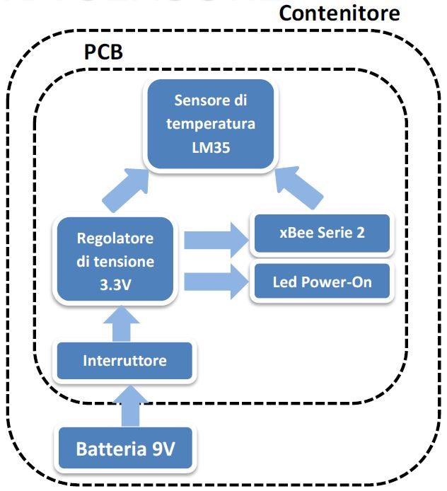 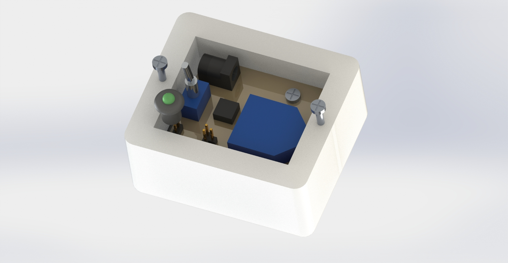 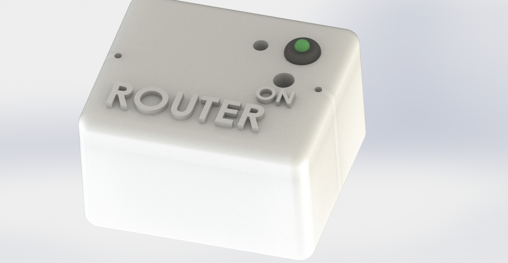
L’xBee centrale (COORDINATOR) è collegato al PC tramite un modulo apposito(Explorer) via USB.
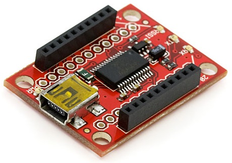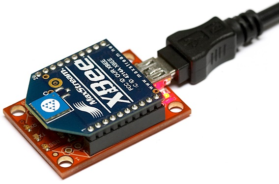 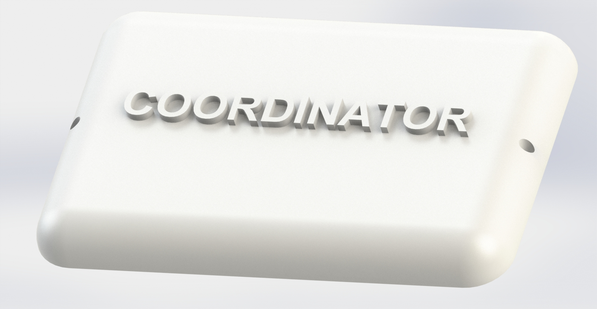
L'alimentazione di ciascun sensore avviene tramite una batteria a 9V 1200mA con un apposito connettore jack da 2.1mm. Possono essere utilizzate batterie anche con tensione maggiore ad esempio 12V, 15V, 18V.
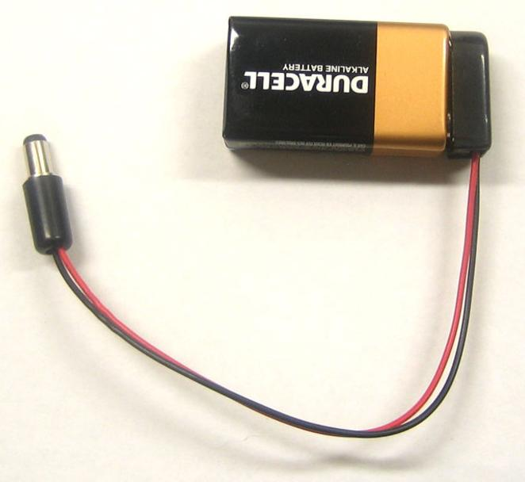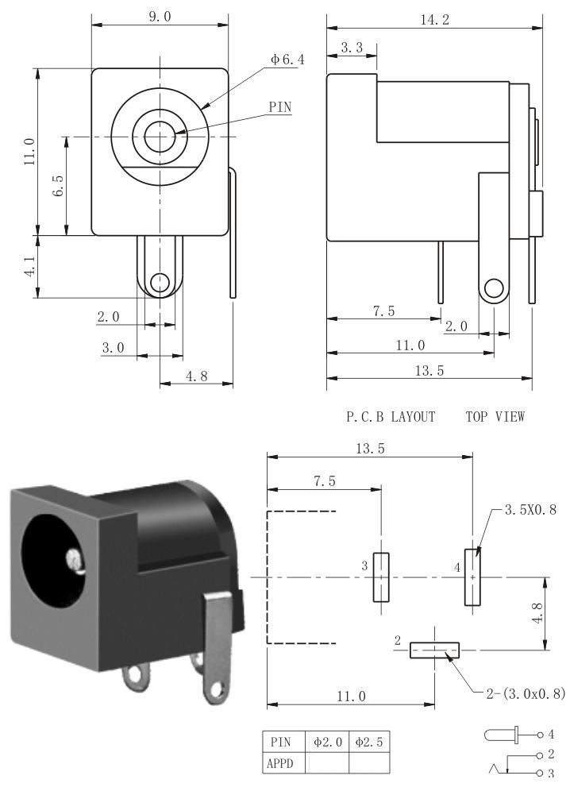
Questo circuito trasforma la tensione fornita dalla batteria in una tensione stabile di 3.3V necessari per alimentare l’xBee e il sensore di temperatura LM35. Schema preso dal datasheet.
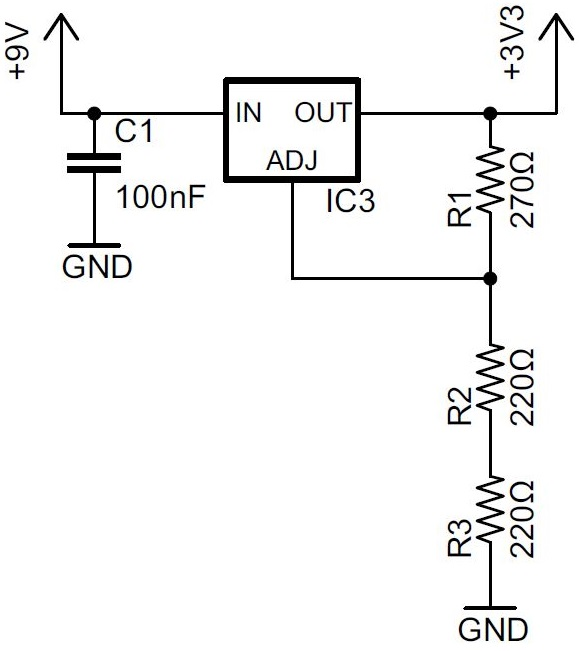
Dimensionamento: Da datasheet:
Il led verde indica che il dispositivo è acceso.
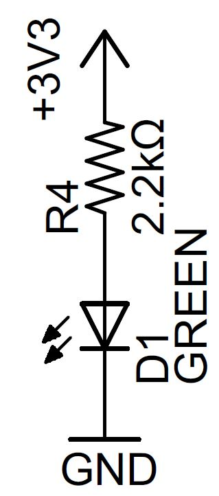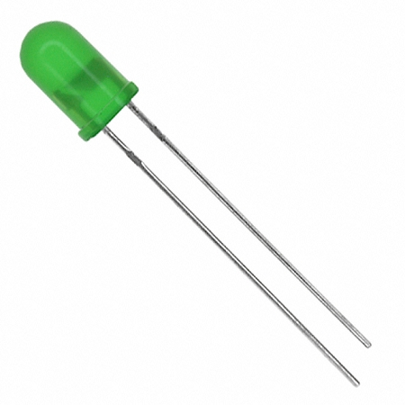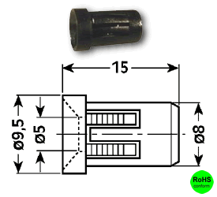
Dimensionamento:
Il modulo XBee Series 2 è una soluzione compatibile con lo standard ZigBee/IEEE 802.15.4 che soddisfa la necessità di una rete a basso costo e a basso consumo, pensata soprattutto per l'utilizzo con sensori. I moduli sono semplici da utilizzare, richiedono pochissima energia e costituiscono una soluzione efficace ed affidabile per la trasmissione di dati critici. Le dimensioni estremamente compatte, fanno risparmiare spazio prezioso nelle applicazioni.
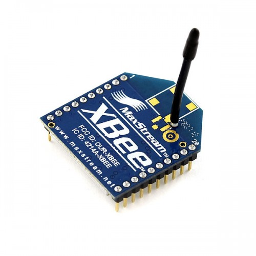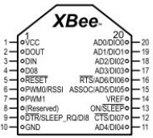
Caratteristiche tecniche:
Circuito di regolazione a 3.3V: I_3.3V=I_(OUT(MIN))+I_ADJ=4.6mA+0.1mA=4.7mA Led di power-on: ILED=500μA LM35: ILM35=500μA da Datasheet Quindi si ha un consumo teorico continuo di 5.7mA ma tenendo conto delle tolleranze dei componenti ci si può mettere nel caso peggiore di un consumo di 6mA. xBee:
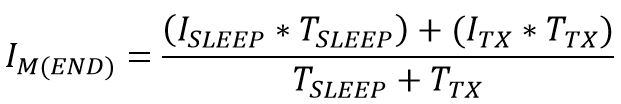
Tsleep è l’intervallo di tempo deciso dall’utente per ogni quanto vuole fare una misura. Ttx=1s è il lasso di tempo massimo impiegato dall’xBee per trasmettere un dato. ROUTER:
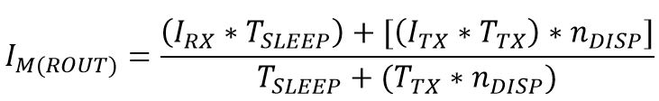
Dove Ndisp è il numero di dispositivi da qui il ROUTER deve ricevere i dati. Durata di vita della batteria:
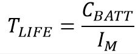
Dove CBATT è la capacità in mA/h che la batteria può fornire e IM è la corrente media in mA assorbita dal ROUTER o l’END-WIRE. Esempio Avendo a disposizione una batteria comune da 9V 1000mA/h per ogni modulo, assumendo che ogni ROUTER debba ricevere dati da altri 3 ROUTER e 10 END-WIRE e si vuole prendere una misura ogni 10min(600s). Ogni quanto si devono effettuare dei cambi di batterie?
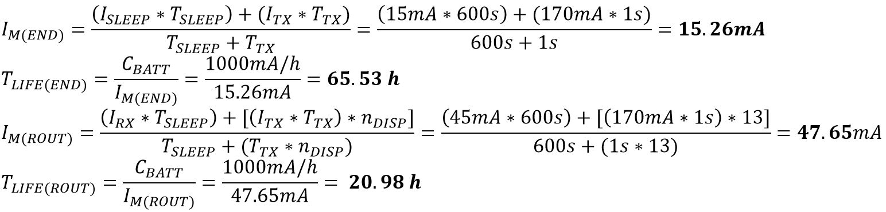
Quindi la batteria per un END-WIRE va sostituita circa ogni 3 giorni mentre quella di un ROUTER ogni giorno. Come si nota dai risultati è chiaro che i moduli xBee pur essendo tra i dispositivi di comunicazione wireless di minor consumo energetico sul mercato, assorbono tanta corrente. Quindi per aumentare l’efficienza di questa rete è necessario utilizzare una batteria con capacità superiore. E anche aumentare l’intervallo di tempo tra un campione di temperatura e l’altro, cosi facendo però la parte di bosco incendiata può venire rilevata tempo dopo e quindi il fuoco si propaga di più. Per ovviare a questo si può aumentare il numero di dispositivi. Ad esempio si può utilizzare una batteria da 100A/h, campionare 1 volta all’ora e pretendendo che un ROUTER riceva dati da altri 10 ROUTER e 400 END-WIRE. Questo significa che su un’area quadrata di 100x100m si ha un sensore ogni 20m e la durata delle batterie raggiunge un anno.
Pe utilizzare questa rete è necessario sapere in precedenza quanti sensori si vogliono collocare e a quale distanza l’uno dall’altro. Infatti, prima dell’installazione deve esserci delle fasi di preparazione del prodotto:
È stato realizzato un PCB contenente tutti i componenti precedentemente elencati. Il pcb e lo schema elettrico sono stati realizzati mediante l’utilizzo del software EAGLE CAD 7.1.
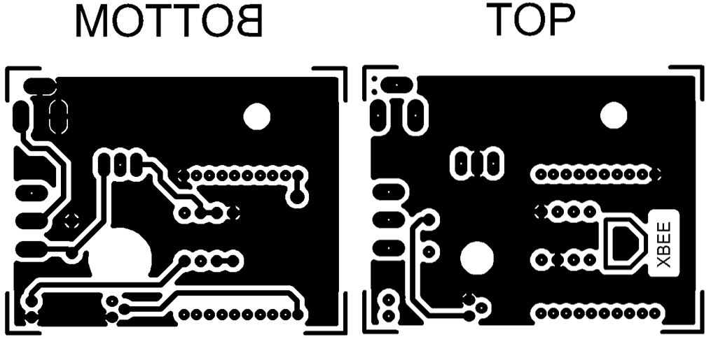 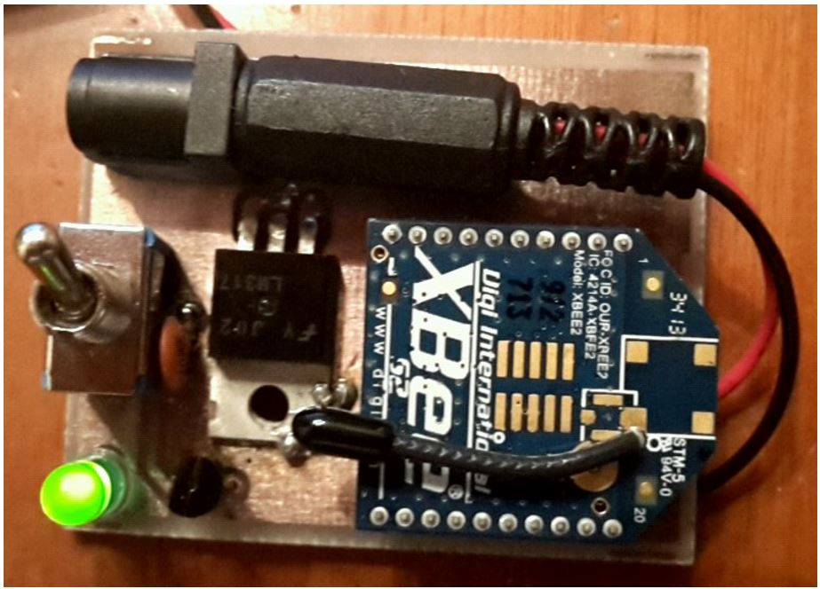
L’xBee non ha bisogno di essere programmato con un linguaggio di programmazione, ma possiede un firmware da caricare e dei valori da settare tramite il software XCTU fornito dalla DIGI. Il firmware serve ad indicare il tipo di dispositivo ZigBee(Coordinator, Router o End-Device). Vediamo il firmware da caricare e i parametri da impostare. Coordinator:
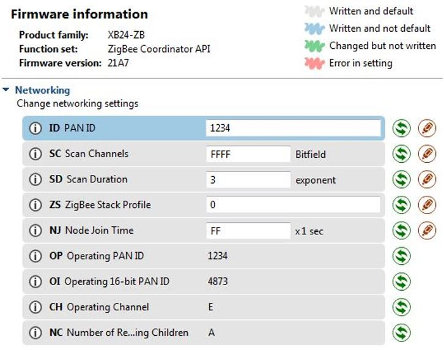
Router e End-Device:
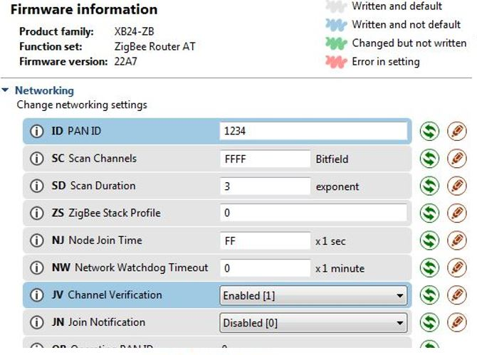 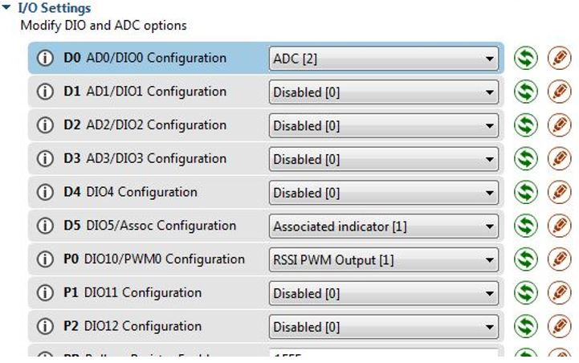 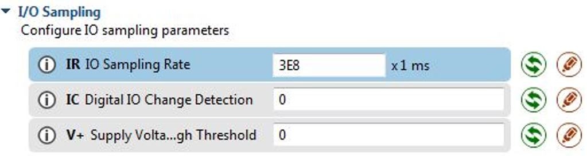
Il software su pc è realizzato con Visual Basic .NET per consentire una maggiore velocità e facilità in fase di programmazione. Grafica La parte grafica visualizzabile da un operatore posto sul punto centrale della rete, si presenta come una cartina della zona, con sopra dei quadrati posti sulle aree in cui sono presenti i corrispondenti sensori. Questi quadrati sono colorati, il loro colore cambia a seconda della temperatura rilevata dal corrispondente sensore: azzurro (temperatura<45°C), arancio (45°C<temperatura<60°C) e rosso (temperatura>60°C). Inoltre è presente il valore di temperatura, la distinzione dei colori è utile all’operatore per riconoscere facilmente a vista una temperatura anomala in caso siano presenti molti sensori.
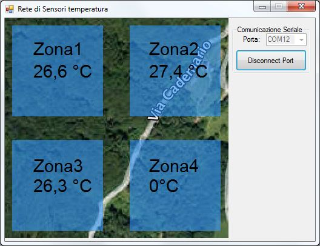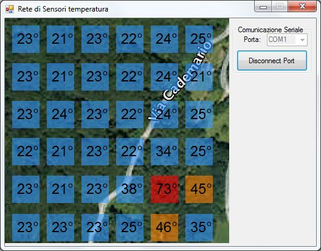
Codice Ogni xBee invia un frame di 22byte in esadecimale all’xBee centrale, il primo byte rappresenta il byte di start che vale 7E, i bye 12 e 13 indicano l’indirizzo dell’xBee invece i byte 20 e 21 rappresentano il valore letto dall’ADC dell’xBee. Quindi il software quando legge il byte 7E si prepara a leggere altri 21 byte e preleva solo il 20esimo e il 21esimo, dopo di che gli converte in decimale e si ricalcola il valore originale.
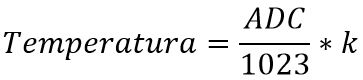
Dove k=100. Il valore di k è impostato di norma a 100 per ogni sensore ma può essere modificato dall’operatore poiché i sensori non sono precisi e col tempo si usurano e potrebbero non restituire una temperatura corretta.
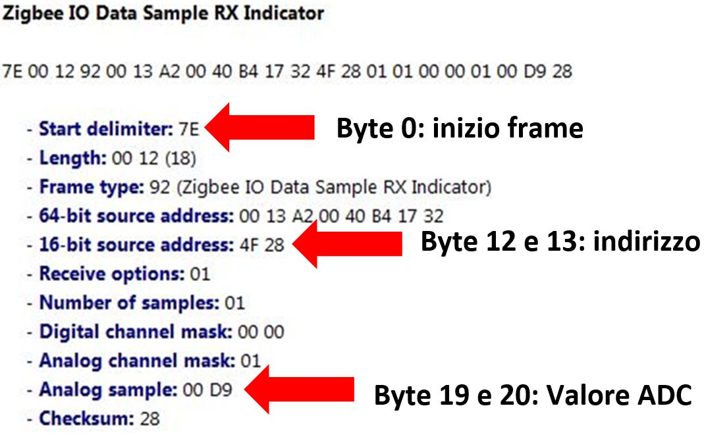
Private Sub ButtonConnectSerialPort__Click() Handles ButtonConnectSerialPort.Click
On Error Resume Next 'Se accadono errori ad una istruzione, la salta per evitare che il programma si arresti
If ButtonConnectSerialPort.Text = "Connect Port" Then 'Se il testo del bottone ConnectSerialPort è "Connect Port":
SerialPort1.PortName = ComboBoxPort.Text 'Assegna al portname la porta COM del ComboBoxPort selozionata
SerialPort1.Open() 'Apre la porta seriale
ButtonConnectSerialPort.Text = "Disconnect Port" 'La scritta sul bottone connetti diventa "Disconnect Port"
ComboBoxPort.Enabled = False 'La ComboBoxPort non può essere più selezionata
Timer1.Enabled = True
Else
SerialPort1.Close() 'Chiude la porta seriale
ButtonConnectSerialPort.Text = "Connect Port" 'La scritta sul bottone connetti diventa "Connect Port"
ComboBoxPort.Enabled = True 'La ComboBoxPort può essere di nuovo selezionata
e = False
Timer1.Enabled = False
End If
End Sub
Private Sub disegna() 'Funzione richiamata per rappresentare graficamente le temperature
'Disegno ZONA 1:
If gradi(0) < 30 Then
LabelGradi0.BackColor = Color.FromArgb(150, 51, 153, 255) 'FromArgb(AlphaValue,RedValue,GreenValue,BlueValue) Azzurro
ElseIf gradi(0) < 35 Then
LabelGradi0.BackColor = Color.FromArgb(150, 255, 128, 0) 'Arancione
Else
LabelGradi0.BackColor = Color.FromArgb(150, 255, 0, 0) 'Rosso
End If
LabelGradi0.Text = gradi(0).ToString("0.0") + "°C"
'Disegno ZONA 2:
If gradi(1) < 30 Then
LabelGradi1.BackColor = Color.FromArgb(150, 51, 153, 255) 'FromArgb(AlphaValue,RedValue,GreenValue,BlueValue) Azzurro
ElseIf gradi(1) < 35 Then
LabelGradi1.BackColor = Color.FromArgb(150, 255, 128, 0) 'Arancione
Else
LabelGradi1.BackColor = Color.FromArgb(150, 255, 0, 0) 'Rosso
End If
LabelGradi1.Text = gradi(1).ToString("0.0") + "°C"
'Disegno ZONA 3:
If gradi(2) < 30 Then
LabelGradi2.BackColor = Color.FromArgb(150, 51, 153, 255) 'FromArgb(AlphaValue,RedValue,GreenValue,BlueValue) Azzurro
ElseIf gradi(2) < 35 Then
LabelGradi2.BackColor = Color.FromArgb(150, 255, 128, 0) 'Arancione
Else
LabelGradi2.BackColor = Color.FromArgb(150, 255, 0, 0) 'Rosso
End If
LabelGradi2.Text = gradi(2).ToString("0.0") + "°C"
End Sub
Private Sub Timer1_Tick() Handles Timer1.Tick
disegna() 'Richiama la funzione disegna() che farà visualizzare graficamente i dati
End Sub
Private Sub SerialPort1_DataReceived() Handles SerialPort1.DataReceived 'Funzione eseguita ogni volta che la porta seriale riceve un dato
'In questo caso la porta seriale non riceverà 1 Byte alla volta ma 22Byte tutti insieme,
'quindi questo evento(Data_Received) viene richiamato 1 Volta sola ogni 22Byte ricevuti.
DatoRicevuto = SerialPort1.ReadByte() 'Assegna alla variabile 1 Byte letto dalla coda della porta seriale
If i > 20 Then i = 0 'Se il contatore è >20 (ovvero 21, cioè sono state eseguite 21 letture oltre a quella iniziale)
If DatoRicevuto = 126 Then e = True '126 in decimale = 7E in esadecimale, ovvero il byte di inizio Frame
If e Then
stringaRicevuta(i) = DatoRicevuto
For j As Integer = 0 To 20 Step 1 'Leggo i 21 Byte rimasti
i = i + 1
DatoRicevuto = SerialPort1.ReadByte()
stringaRicevuta(i) = DatoRicevuto
Next
'Unione dei 2 byte del valore dell'ADC e calcolo valore in Volt:
Dim valoreHex20 As String
If Hex(stringaRicevuta(20)).Length < 2 Then
valoreHex20 = "0" & Hex(stringaRicevuta(20))
Else
valoreHex20 = Hex(stringaRicevuta(20))
End If
valoreHEX = Hex(stringaRicevuta(19)) & valoreHex20 'Hex(stringaRicevuta(20)) 'Il valore della misura dell'ADC è composto da 2 Byte
valoreDEC = Convert.ToInt32(valoreHEX, 16) 'Converto il valore esadecimale in un Intero a 16 bit
valoreVolt = (valoreDEC / 1023) * 1.2 'Calcolo il valore dei volt misurati
indirizzo = Hex(stringaRicevuta(12)) & Hex(stringaRicevuta(13)) 'Ricavo l'indirizzo dell'xBee
Dim indirizzoDec As Integer
indirizzoDec = Convert.ToInt32(indirizzo, 16)
'Inserisco nell'array dei valori i rispettivi valori dei sensori
If indirizzi(0) = indirizzoDec Then
indirizzi(0) = indirizzoDec
gradi(0) = valoreVolt * NumericUpDown1.Value
Else
If indirizzi(0) = 0 Then
indirizzi(0) = indirizzoDec
gradi(0) = valoreVolt * NumericUpDown1.Value
Else
If indirizzi(1) = indirizzoDec Then
indirizzi(1) = indirizzoDec
gradi(1) = valoreVolt * NumericUpDown2.Value
Else
If indirizzi(1) = 0 Then
indirizzi(1) = indirizzoDec
gradi(1) = valoreVolt * NumericUpDown2.Value
Else
If indirizzi(2) = indirizzoDec Then
indirizzi(2) = indirizzoDec
gradi(2) = valoreVolt * NumericUpDown3.Value
Else
If indirizzi(2) = 0 Then
indirizzi(2) = indirizzoDec
gradi(2) = valoreVolt * NumericUpDown3.Value
End If
End If
End If
End If
End If
End If
End If
End Sub
End Class
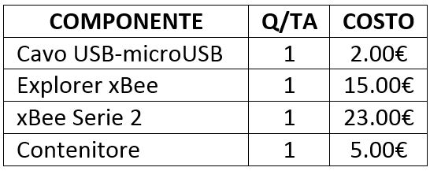
Costo totale coordinator: 45€ Router o End-Wire: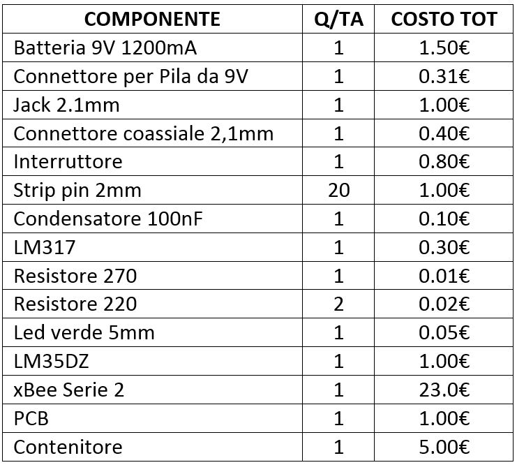
Costo totale Router o End Wire: 35€Come si vede il costo è molto basso, ad esempio supponendo di volere una rete di 100 sensori, distanti 100m l’uno dall’altro, quindi comprendo un area quadrata di 1Km x 1Km, il costo totale sarà di 3500€ se non di meno, visto che comprando in grandi quantità i componenti si spende meno.
Il progetto si è concluso con successo, anche se non si era partiti nel modo migliore, visto la scarsità di componenti reperibili nei laboratori dell’istituto. Questo progetto rappresenta quindi un prototipo realizzato artigianalmente di un progetto molto più ampio. Alcuni miglioramenti che sicuramente devono essere effettuati avendo più risorse e mezzi sono: utilizzo di una batteria che abbia una capacità maggiore, ad esempio si può implementare la tecnologia dei carica batterie portatili per gli smartphone, che posseggono capacità dell’ordine delle decine di migliaia di mA. Anche un contenitore impermeabile, poiché nei boschi c’è sicuramente molta umidità, e prima o poi piove. Utilizzo di un sensore di temperatura migliore, che magari abbia un range di temperature superiore ai 150°C. Questo progetto risulta applicabile in altri ambiti, ad esempio all’interno di una serra per monitorare la temperatura ambientale in vari punti, o aggiungendo altri sensori, si può rilevare anche l’umidità e altre caratteristiche sulle piante e ambientali nei boschi, nelle serre e in qualsiasi altro ambiente.
{kind=link}